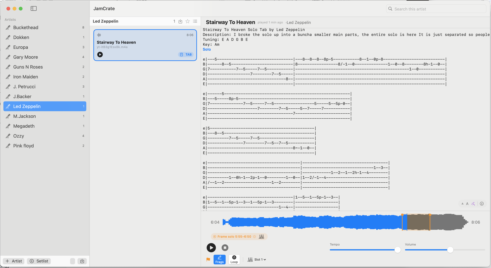

JamCrate brings your backing tracks, tabs, chord sheets and song notes into one organized library on your Mac.
Import them once. Choose a song. Start playing.
macOS 14+ · Apple Silicon and Intel · Free beta
About 20 MB · Universal build · Signed and notarized by Apple · macOS 14 Sonoma or later
Prefer a package manager? brew install --cask vitas/jamcrate/jamcrate

JamCrate is deliberately simple: organize once, then open a song and play.
Import tracks and tabs together. JamCrate pairs what it can and asks only when something is unclear.
The backing track, tab, notes and useful links are already together in one place.
Play the track, loop a difficult fragment or move through a setlist without hunting for files.
Not a tab editor and not a studio. A practical player for guitarists who already have their own material.
Open PDF, text, chord sheets or Guitar Pro 3–5 files to refresh the part before playing. Tabs are not synced to notes or bars; optional auto-scroll moves through them proportionally with the track.
Mark a solo or verse, loop it and slow it down to 0.5× without changing the pitch.
Scan a QR code on the same Wi-Fi. Play loops on the phone or use it as a remote while the music stays on your Mac.
Away from your Mac? Export a set and open it in the browser companion. It plays that set offline, on any device — but it is a read-only companion, not the app on your phone and not a replacement for the Mac version. It opens with a demo set: two tracks by Kevin MacLeod (incompetech.com), used under Creative Commons BY 4.0.
Keep setlists, favorites, notes and links with each song. Back up the complete library as one archive.
MIDI preset switching is already built. When a song starts, or when playback crosses a solo marker, JamCrate sends program changes, control changes or SysEx to a connected device, driven by shareable .jamrig profiles (⌥⌘R). The M-VAVE Tank-G is done and verified on the pedal itself — all 9 banks and 4 slots, over plain USB, with no vendor app running. Everything else is on request: the frame differs per model, so I need the actual pedal to get it right. The Rig window has a Test button and a MIDI monitor; tell me which gear you use and it goes on the list.
Still an idea: exporting a set as numbered tracks, separate solo loops and M3U playlists for any ordinary player. Tell me what matters at beta@jamcrate.app.
JamCrate is free during beta. It is made for guitarists who already have folders of backing tracks, tabs and several versions of the same songs.
Download JamCrate.dmgAbout 20 MB · Universal build · Signed and notarized by Apple · macOS 14 Sonoma or later
Signed and notarized by Apple, so JamCrate opens with an ordinary double-click. No right-click, no System Settings detour, no Terminal.
With Homebrew
brew install --cask vitas/jamcrate/jamcrateInstalls to Applications and updates later with brew upgrade --cask jamcrate. No tap needed — the full path works as-is.
Or download the DMG
Coming from an earlier beta that macOS blocked? The old build needed the two-step “Open Anyway” dance. This one does not.